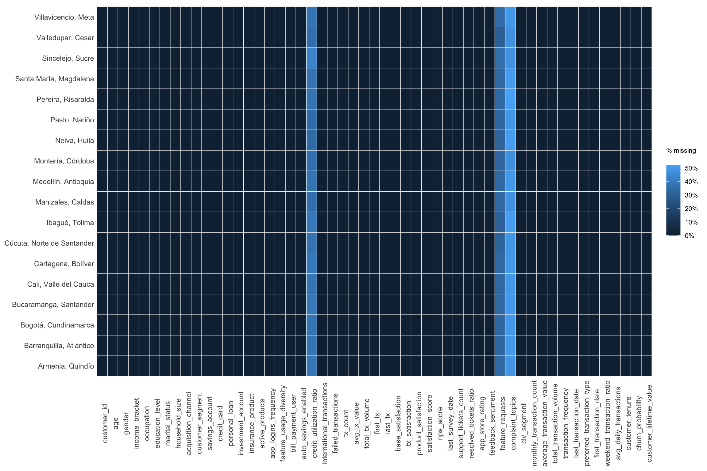
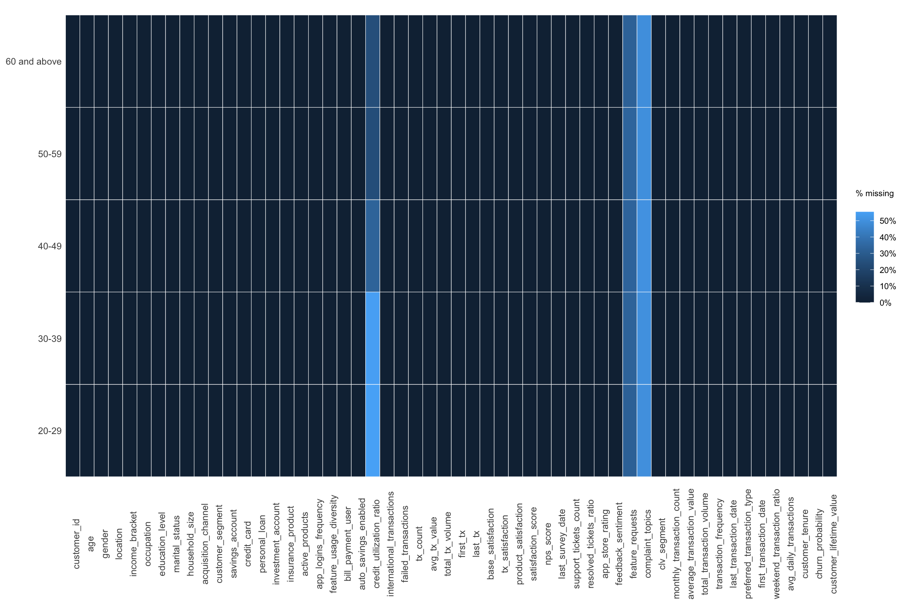
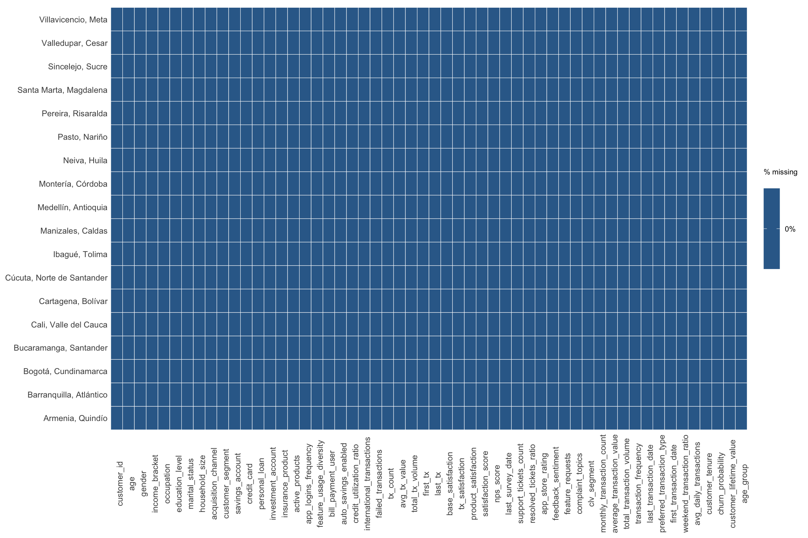

pacman::p_load("ExPanDaR", "countrycode", "kableExtra", "tidyverse", "lubridate")Data Preparation
Step-by-Step Data Preparation
1. Installing and launching required R packages
2. Loading and merging the data
customer_data <- read_csv("data/customer_data.csv")Since the data was split into two files, we merged them using customer_id to complete the dataset for further exploration.
str(customer_data)spc_tbl_ [48,723 × 54] (S3: spec_tbl_df/tbl_df/tbl/data.frame)
$ customer_id : num [1:48723] 93716481 49020929 52690950 23199751 61997066 ...
$ age : num [1:48723] 44 44 45 45 44 45 44 44 45 44 ...
$ gender : chr [1:48723] "Male" "Male" "Male" "Male" ...
$ location : chr [1:48723] "Pereira, Risaralda" "Cali, Valle del Cauca" "Barranquilla, Atlántico" "Bogotá, Cundinamarca" ...
$ income_bracket : chr [1:48723] "Very High" "Medium" "High" "High" ...
$ occupation : chr [1:48723] "Engineer" "Construction Worker" "Construction Worker" "Electrician" ...
$ education_level : chr [1:48723] "Master" "Bachelor" "Bachelor" "High School" ...
$ marital_status : chr [1:48723] "Married" "Married" "Married" "Single" ...
$ household_size : num [1:48723] 5 2 4 2 3 4 4 3 1 3 ...
$ acquisition_channel : chr [1:48723] "Partnership" "Paid Ad" "Paid Ad" "Referral" ...
$ customer_segment : chr [1:48723] "occasional" "regular" "inactive" "inactive" ...
$ savings_account : logi [1:48723] TRUE TRUE TRUE TRUE TRUE TRUE ...
$ credit_card : logi [1:48723] TRUE FALSE FALSE FALSE TRUE TRUE ...
$ personal_loan : logi [1:48723] FALSE FALSE FALSE FALSE FALSE FALSE ...
$ investment_account : logi [1:48723] FALSE FALSE TRUE TRUE FALSE TRUE ...
$ insurance_product : logi [1:48723] TRUE FALSE TRUE FALSE FALSE FALSE ...
$ active_products : num [1:48723] 1 5 3 2 1 1 1 4 2 3 ...
$ app_logins_frequency : num [1:48723] 15 30 4 15 19 15 44 22 7 11 ...
$ feature_usage_diversity : num [1:48723] 3 0 4 4 1 4 6 1 1 6 ...
$ bill_payment_user : logi [1:48723] FALSE TRUE TRUE TRUE FALSE TRUE ...
$ auto_savings_enabled : logi [1:48723] FALSE FALSE FALSE FALSE FALSE TRUE ...
$ credit_utilization_ratio : num [1:48723] 0.179 NA NA NA 0.404 ...
$ international_transactions: num [1:48723] 1 1 1 1 0 0 0 0 0 1 ...
$ failed_transactions : num [1:48723] 0 0 0 1 0 0 1 1 0 0 ...
$ tx_count : num [1:48723] 76 10 10 23 18 15 24 45 134 13 ...
$ avg_tx_value : num [1:48723] 1679872 5445810 640335 660180 14574469 ...
$ total_tx_volume : num [1:48723] 1.28e+08 5.45e+07 6.40e+06 1.52e+07 2.62e+08 ...
$ first_tx : Date[1:48723], format: "2023-01-05" "2023-02-05" ...
$ last_tx : Date[1:48723], format: "2023-12-25" "2023-12-20" ...
$ base_satisfaction : num [1:48723] 9.21 6.07 8.2 7.53 6.61 ...
$ tx_satisfaction : num [1:48723] 0.38 0.05 0.05 0.115 0.09 0.075 0.12 0.225 0.67 0.065 ...
$ product_satisfaction : num [1:48723] 0.6 0.2 0.6 0.4 0.4 0.6 0.4 0.4 0.6 0.8 ...
$ satisfaction_score : num [1:48723] 5 3 4 4 3 4 4 4 5 4 ...
$ nps_score : num [1:48723] -7 -46 -29 -31 -47 -29 -34 -36 -4 -27 ...
$ last_survey_date : Date[1:48723], format: "2023-12-16" "2023-05-05" ...
$ support_tickets_count : num [1:48723] 1 1 0 2 2 1 1 0 2 0 ...
$ resolved_tickets_ratio : num [1:48723] 0 1 0 0.5 1 1 1 0 1 0 ...
$ app_store_rating : num [1:48723] 3.5 4 5 4.5 4 4 5 4.5 4.5 4.5 ...
$ feedback_sentiment : chr [1:48723] "Neutral" "Positive" "Positive" "Positive" ...
$ feature_requests : chr [1:48723] "Budgeting tools" NA NA "Cryptocurrency trading, Budgeting tools" ...
$ complaint_topics : chr [1:48723] NA NA NA NA ...
$ clv_segment : chr [1:48723] "Gold" "Bronze" "Gold" "Bronze" ...
$ monthly_transaction_count : num [1:48723] 1.43 1.57 2.5 1.56 2.11 ...
$ average_transaction_value : num [1:48723] 6054025 2127414 3575915 1513354 612674 ...
$ total_transaction_volume : num [1:48723] 60540250 23401550 35759150 21186950 11640800 ...
$ transaction_frequency : num [1:48723] 0.0308 0.0329 0.05 0.0478 0.0619 ...
$ last_transaction_date : Date[1:48723], format: "2023-12-05" "2023-12-18" ...
$ preferred_transaction_type: chr [1:48723] "Transfer" "Transfer" "Transfer" "Transfer" ...
$ first_transaction_date : Date[1:48723], format: "2023-01-05" "2023-02-05" ...
$ weekend_transaction_ratio : num [1:48723] 0.3 0.182 0.3 0.143 0.316 ...
$ avg_daily_transactions : num [1:48723] 0.0308 0.0329 0.05 0.0478 0.0619 ...
$ customer_tenure : num [1:48723] 11.63 11.5 8.77 10.73 11.63 ...
$ churn_probability : num [1:48723] 0.362 0.182 0.321 0.337 0.398 ...
$ customer_lifetime_value : num [1:48723] 3.12e+08 1.67e+08 1.94e+07 3.60e+07 3.05e+08 ...
- attr(*, "spec")=
.. cols(
.. customer_id = col_double(),
.. age = col_double(),
.. gender = col_character(),
.. location = col_character(),
.. income_bracket = col_character(),
.. occupation = col_character(),
.. education_level = col_character(),
.. marital_status = col_character(),
.. household_size = col_double(),
.. acquisition_channel = col_character(),
.. customer_segment = col_character(),
.. savings_account = col_logical(),
.. credit_card = col_logical(),
.. personal_loan = col_logical(),
.. investment_account = col_logical(),
.. insurance_product = col_logical(),
.. active_products = col_double(),
.. app_logins_frequency = col_double(),
.. feature_usage_diversity = col_double(),
.. bill_payment_user = col_logical(),
.. auto_savings_enabled = col_logical(),
.. credit_utilization_ratio = col_double(),
.. international_transactions = col_double(),
.. failed_transactions = col_double(),
.. tx_count = col_double(),
.. avg_tx_value = col_double(),
.. total_tx_volume = col_double(),
.. first_tx = col_date(format = ""),
.. last_tx = col_date(format = ""),
.. base_satisfaction = col_double(),
.. tx_satisfaction = col_double(),
.. product_satisfaction = col_double(),
.. satisfaction_score = col_double(),
.. nps_score = col_double(),
.. last_survey_date = col_date(format = ""),
.. support_tickets_count = col_double(),
.. resolved_tickets_ratio = col_double(),
.. app_store_rating = col_double(),
.. feedback_sentiment = col_character(),
.. feature_requests = col_character(),
.. complaint_topics = col_character(),
.. clv_segment = col_character(),
.. monthly_transaction_count = col_double(),
.. average_transaction_value = col_double(),
.. total_transaction_volume = col_double(),
.. transaction_frequency = col_double(),
.. last_transaction_date = col_date(format = ""),
.. preferred_transaction_type = col_character(),
.. first_transaction_date = col_date(format = ""),
.. weekend_transaction_ratio = col_double(),
.. avg_daily_transactions = col_double(),
.. customer_tenure = col_double(),
.. churn_probability = col_double(),
.. customer_lifetime_value = col_double()
.. )
- attr(*, "problems")=<externalptr> customer_data %>%
filter(is.na(age)) %>%
summarise(missing_customers = n_distinct(customer_id))# A tibble: 1 × 1
missing_customers
<int>
1 03. Dataset overview
3.1 Unique Location
unique(customer_data$location) [1] "Pereira, Risaralda" "Cali, Valle del Cauca"
[3] "Barranquilla, Atlántico" "Bogotá, Cundinamarca"
[5] "Cartagena, Bolívar" "Medellín, Antioquia"
[7] "Villavicencio, Meta" "Ibagué, Tolima"
[9] "Manizales, Caldas" "Cúcuta, Norte de Santander"
[11] "Pasto, Nariño" "Santa Marta, Magdalena"
[13] "Bucaramanga, Santander" "Montería, Córdoba"
[15] "Neiva, Huila" "Armenia, Quindío"
[17] "Valledupar, Cesar" "Sincelejo, Sucre" 3.2 Missing values
missing.values <- customer_data %>%
gather(key = "key", value = "val") %>%
mutate(is.missing = is.na(val)) %>%
group_by(key, is.missing) %>%
summarise(num.missing = n(), .groups = 'drop') %>%
filter(is.missing == TRUE) %>%
select(-is.missing) %>%
arrange(desc(num.missing))
missing.values %>% kable()| key | num.missing |
|---|---|
| complaint_topics | 24346 |
| credit_utilization_ratio | 18263 |
| feature_requests | 16115 |
missing_values_by_loc <- function(origin, vari = "location"){
prepare_missing_values_graph(origin, ts_id = vari)
}
missing_values_by_loc(customer_data)
customer_data <- customer_data %>%
mutate(age_group = case_when(
age < 20 ~ "Under 20",
age >= 20 & age < 30 ~ "20-29",
age >= 30 & age < 40 ~ "30-39",
age >= 40 & age < 50 ~ "40-49",
age >= 50 & age < 60 ~ "50-59",
age >= 60 ~ "60 and above",
TRUE ~ "Unknown"
)) %>%
mutate(age_group = factor(age_group, levels = c("Under 20", "20-29", "30-39", "40-49", "50-59", "60 and above", "Unknown")))
missing_values_by_age <- function(origin, vari = "age_group"){
prepare_missing_values_graph(origin, ts_id = vari)
}
missing_values_by_age(customer_data)
3.3 Treating Missing values
customer_data_cleaned <- customer_data %>%
mutate(
complaint_topics = replace_na(complaint_topics, "No Complaints"),
feature_requests = replace_na(feature_requests, "No Requests"),
credit_utilization_ratio = case_when(
is.na(credit_utilization_ratio) & (credit_card == 0 | is.na(credit_card)) ~ 0,
TRUE ~ credit_utilization_ratio
)
)
customer_data_cleaned %>%
summarise(
NA_complaints = sum(is.na(complaint_topics)),
NA_requests = sum(is.na(feature_requests)),
NA_credit = sum(is.na(credit_utilization_ratio))
) %>%
kable(caption = "Missing Values After Imputation") %>%
kable_styling(bootstrap_options = c("striped", "hover"))| NA_complaints | NA_requests | NA_credit |
|---|---|---|
| 0 | 0 | 0 |
missing_values_by_loc(customer_data_cleaned)
write_csv(customer_data_cleaned, "data/colombia_customers_processed.csv")nrow(customer_data_cleaned)[1] 48723